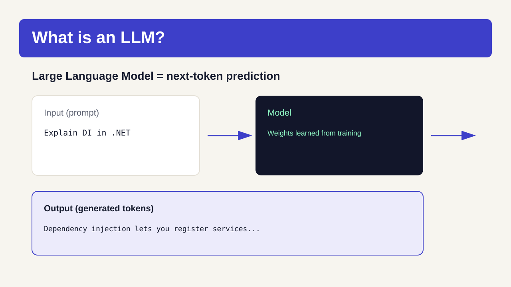

A large language model (LLM) is a neural network trained to predict the next token in text. At runtime it does not “look things up” in a database like SQL — it generates likely continuations from patterns learned during training, guided by your prompt.
From the deck

What it is (and is not)
| It is | It is not |
|---|---|
| A text-in, text-out prediction engine | A guaranteed source of truth |
| Strong at language, code, and reasoning patterns | Your production database or auth system |
| Updated via prompts + tools + retrieval you add | Trained on your private data unless you connect it |
Why backend engineers care
Applied AI engineering is mostly APIs, reliability, and boundaries: you wrap the model in services, validate outputs, log tokens, handle failures, and keep customer data out of prompts. You rarely train models from scratch — you integrate them like any other dependency.
Messages and settings you send (see Roles and Tokens & context).
Generated tokens until a stop condition — shaped by Controlling the output.
Parse, validate, persist, and decide when to call the model again.
Examples
Everyday vs backend
ChatGPT / Cursor chat
You ask: "Summarise this PR" → model generates a summary (may be wrong — you review).Your ASP.NET Core API
POST /chat with IChatClient → stream tokens to UI → log usage → never auto-execute SQL from model text.Not an LLM job alone
"What is customer 12345's balance?" → needs your DB + auth, not guessing.Internal use only. Do not paste customer data or secrets into public chat tools.